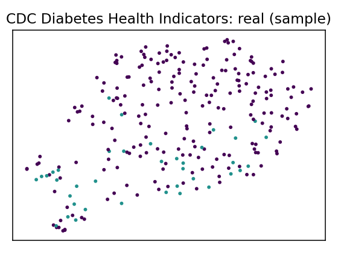
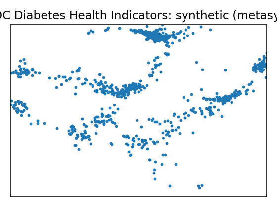
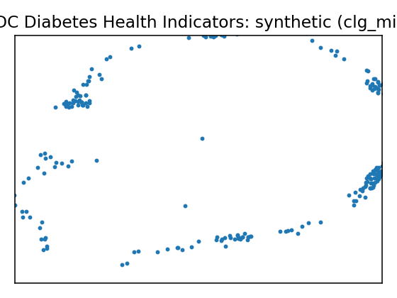
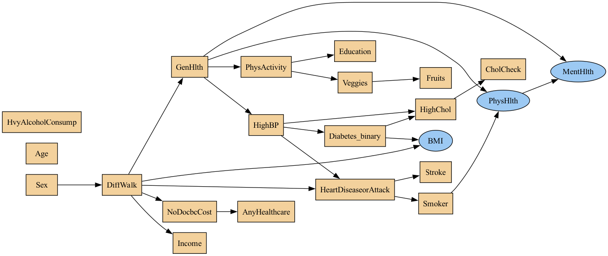
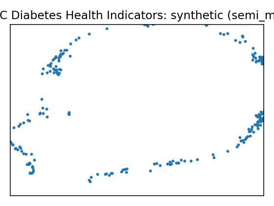
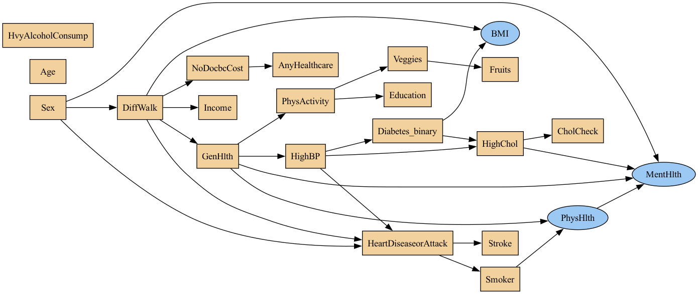
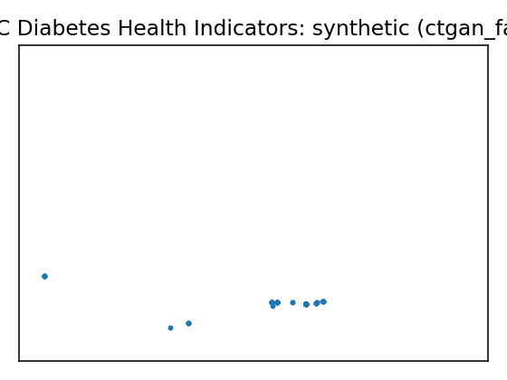

Data Report — CDC Diabetes Health Indicators
Source: UCI dataset 891
SemMap JSON-LD: dataset.semmap.json · RDFa HTML
Overview
| Metric | Value |
|---|---|
| Dataset | CDC Diabetes Health Indicators |
| Source | UCI dataset 891 |
| Rows | 253,680 |
| Columns | 22 |
| Discrete | 19 |
| Continuous | 3 |
| SemMap | SemMap JSON-LD SemMap HTML |
| Missingness | Not modeled |
Variables and summary
| variable | inferred | dist |
|---|---|---|
| HighBP | discrete | 1: 108829 (42.90%) |
| HighChol | discrete | 1: 107591 (42.41%) |
| CholCheck | discrete | 1: 244210 (96.27%) |
| BMI | continuous | 28.3824 ± 6.6087 [12, 24, 27, 31, 98] |
| Smoker | discrete | 1: 112423 (44.32%) |
| Stroke | discrete | 1: 10292 (4.06%) |
| HeartDiseaseorAttack | discrete | 1: 23893 (9.42%) |
| PhysActivity | discrete | 1: 191920 (75.65%) |
| Fruits | discrete | 1: 160898 (63.43%) |
| Veggies | discrete | 1: 205841 (81.14%) |
| HvyAlcoholConsump | discrete | 1: 14256 (5.62%) |
| AnyHealthcare | discrete | 1: 241263 (95.11%) |
| NoDocbcCost | discrete | 1: 21354 (8.42%) |
| GenHlth | discrete | 2: 89084 (35.12%) 3: 75646 (29.82%) 1: 45299 (17.86%) 4: 31570 (12.44%) 5: 12081 (4.76%) |
| MentHlth | continuous | 3.1848 ± 7.4128 [0, 0, 0, 2, 30] |
| PhysHlth | continuous | 4.2421 ± 8.7180 [0, 0, 0, 3, 30] |
| DiffWalk | discrete | 1: 42675 (16.82%) |
| Sex | discrete | 1: 111706 (44.03%) |
| Age | discrete | 9: 33244 (13.10%) 10: 32194 (12.69%) 8: 30832 (12.15%) 7: 26314 (10.37%) 11: 23533 (9.28%) 6: 19819 (7.81%) 13: 17363 (6.84%) 5: 16157 (6.37%) 12: 15980 (6.30%) 4: 13823 (5.45%) … (+3 more) |
| Education | discrete | 6: 107325 (42.31%) 5: 69910 (27.56%) 4: 62750 (24.74%) 3: 9478 (3.74%) 2: 4043 (1.59%) 1: 174 (0.07%) |
| Income | discrete | 8: 90385 (35.63%) 7: 43219 (17.04%) 6: 36470 (14.38%) 5: 25883 (10.20%) 4: 20135 (7.94%) 3: 15994 (6.30%) 2: 11783 (4.64%) 1: 9811 (3.87%) |
| Diabetes_binary | discrete | 1: 35346 (13.93%) |
Fidelity summary
| model | backend | disc_jsd_mean | disc_jsd_median | cont_ks_mean | cont_w1_mean | privacy_overlap | downstream_sign_match |
|---|---|---|---|---|---|---|---|
| metasyn | metasyn | 0.0408 | 0.0369 | 0.4563 | 2.2709 | ||
| clg_mi2 | pybnesian | 0.0436 | 0.0312 | 0.2663 | 3.0082 | ||
| semi_mi5 | pybnesian | 0.0388 | 0.0244 | 0.263 | 2.9479 | ||
| ctgan_fast | synthcity | 0.2383 | 0.2151 | 0.8227 | 6.1013 | ||
| tvae_quick | synthcity | 0.1005 | 0.0882 | 0.394 | 1.949 |
Models
| UMAP | Details | Structure |
|---|---|---|
 |
Real data | |
 |
Model: metasyn (metasyn)
| |
 |
Model: clg_mi2 (pybnesian)
|
 |
 |
Model: semi_mi5 (pybnesian)
|
 |
 |
Model: ctgan_fast (synthcity)
| |
Model: tvae_quick (synthcity)
|
{kind=link}
{kind=link}